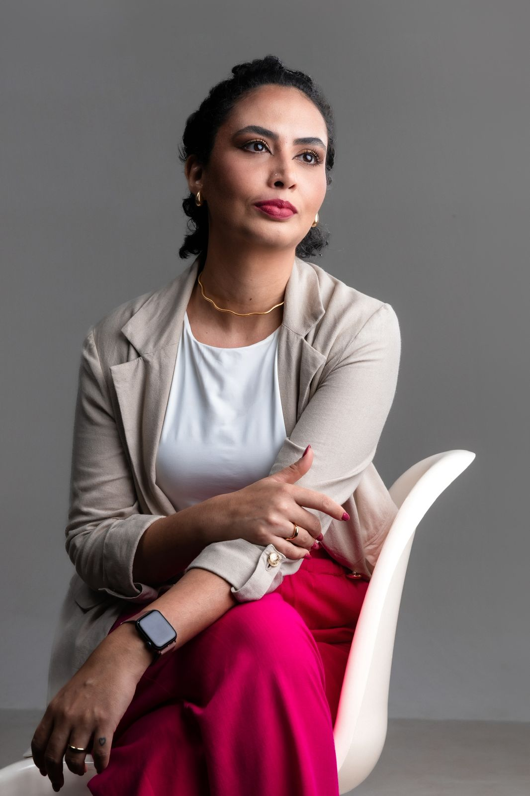

Uma jornada prática de 21 dias para desenvolver novos recursos emocionais enquanto você fortalece a sua confiança em Deus.
Talvez você se identifique comigo
A ansiedade não escolhe quem tem fé. A mente acelerada, o medo sem explicação, o corpo em alerta: tudo isso pode estar presente mesmo enquanto você ama a Deus e confia nele de todo o coração.
Cuidar das suas emoções não diminui a sua fé. As duas coisas podem caminhar juntas, lado a lado.
E se a ansiedade ocupasse menos espaço e você tivesse de volta a sua leveza e a sua paz?
Fé e emoções
Durante muito tempo, eu achei que precisava escolher: ou cuidar das minhas emoções, ou confiar em Deus.
Com o tempo, percebi que uma coisa não exclui a outra. A oração me sustentava; as ferramentas práticas me ensinavam a responder de um jeito novo. Orar e agir nunca foram opostos.
A Jornada Xô Ansiedade nasceu dessa união: fé e ferramentas práticas, caminhando lado a lado.
O caminho da Jornada Xô Ansiedade
A ansiedade pode aparecer nos pensamentos, no corpo e nas respostas automáticas. Durante três semanas, você será conduzida a reconhecer esses padrões e experimentar novas formas de lidar com eles.
Reconheça os sinais do corpo, observe o ritmo da mente e compreenda o que está sentindo sem transformar a ansiedade em motivo de culpa.
Semana 1Questione previsões do medo, observe interpretações automáticas e desenvolva um diálogo interno mais claro, respeitoso e equilibrado.
Semana 2Fortaleça sua autonomia e dê pequenos passos para voltar a fazer escolhas sem deixar que o medo esteja sempre no comando.
Semana 3Tudo o que você recebe
Não é conteúdo pra você salvar e esquecer. Cada peça tem um papel no processo, e elas funcionam juntas, não separadas.
O eBook completo da jornada, com exercícios práticos, ferramentas para transformar a forma como você lida com a ansiedade e aplicações para cada dia.
Cada dia traz um tema, conduz uma prática e te ajuda a entender o que acontece nos seus pensamentos, nas suas emoções e nas suas escolhas. Linguagem leve, pra ler no celular e aplicar no seu dia, no seu ritmo.
VoltarUm áudio para cada dia da jornada, com exercícios guiados, reflexões e aplicações práticas para acalmar e conduzir o seu dia.
Ouça deitada, com fones, antes de dormir: os áudios conduzem a sua mente a desacelerar até o sono chegar. Por levarem a um relaxamento profundo, nunca escute enquanto dirige ou faz algo que exija atenção.
VoltarA Claire é a sua IA de escrita: você coloca em palavras o que sente e ela ajuda a organizar os pensamentos, refletir e aplicar os exercícios de cada dia.
Você escreve o que está sentindo, a qualquer hora, e a Claire te ajuda a organizar os pensamentos, enxergar com mais clareza e encontrar o próximo passo possível. Sem julgamento, no seu tempo.
Voltar
Quem está com você nessa
Durante quase 30 anos, convivi com ansiedade e síndrome do pânico. Eu orava, confiava em Deus e, mesmo assim, continuava lutando contra pensamentos acelerados, medo constante e a necessidade de controlar tudo.
Organizei a minha vida inteira ao redor do medo: aonde eu ia, do que fugia, quem eu deixava de ser. E ainda carregava a culpa de achar que, se a minha fé fosse maior, eu não sentiria aquilo.
A virada começou quando entendi que eu não precisava escolher entre confiar em Deus e cuidar das minhas emoções. Aprendi novas formas de lidar com os meus pensamentos e desenvolvi recursos emocionais que me ajudaram a deixar de ser controlada pela ansiedade.
Sou cristã, estudante de Teologia, e compartilho a minha experiência. Foi desse caminho que nasceu a Jornada Xô Ansiedade: o que eu queria ter encontrado quando estava no fundo do poço.
Ao longo da jornada, alguns dias pedem um apoio diferente. Esses bônus caminham com você nesses momentos.
Um guia rápido para os momentos de preocupação intensa e sobrecarga emocional, com passos simples pra você atravessar a crise com mais cuidado.
Um material especial para fortalecer a sua confiança em Deus enquanto você aprende a lidar melhor com as suas emoções.
Acesso ao nosso grupo, que está nascendo junto com a jornada. Um espaço pra trocar com outras mulheres que vivem o mesmo: desabafo, conquista e apoio no dia a dia.
Só em bônus: R$ 138. Tudo incluso na sua jornada.
Antes de você decidir
Prefiro ser sincera com você agora do que te ver frustrada depois. Toque nos botões e veja qual lado combina com o seu momento.
Se você se reconheceu, a Jornada Xô Ansiedade foi feita pra esse seu momento.
Sem problema. Talvez não seja a hora, e está tudo bem reconhecer isso.
A jornada completa
Durante 21 dias, você é conduzida por um eBook, áudios e exercícios práticos para desenvolver novos recursos emocionais enquanto fortalece a sua confiança em Deus.
Em breve, aqui
A Jornada Xô Ansiedade é nova. Em vez de inventar depoimentos, reservamos este lugar para as vozes reais de quem viver a jornada.
Já viveu a Jornada Xô Ansiedade? Compartilhe sua experiência e marque @teologabrunamiranda.
Perguntas frequentes
Não. A jornada explica cada etapa com linguagem simples e conduz uma prática por dia.
Sim. Foi criada por uma mulher cristã, para mulheres cristãs, e une a sua fé a ferramentas práticas para lidar com a ansiedade. Não é um devocional, estudo bíblico ou aconselhamento espiritual: é uma experiência prática que caminha lado a lado com a sua fé.
Não. A Bruna é cristã, estudante de Teologia, e compartilha a própria experiência de quase 30 anos convivendo com a ansiedade. Ela divide um caminho prático, não um atendimento profissional.
Bem pouco. A ideia é que caiba no dia que você já tem, não no dia que você gostaria de ter. Você define o ritmo, e pode repetir qualquer dia quando quiser. Continuidade importa mais que intensidade.
Não. A Jornada Xô Ansiedade é um recurso complementar de autoconhecimento. Ela não realiza diagnósticos e não substitui acompanhamento psicológico, médico ou medicamentos prescritos.
Assim que o pagamento é confirmado, o acesso chega no seu e-mail. Tudo digital, você começa na hora, do celular ou do computador.
O acesso é pra sempre. Você usa no seu ritmo e pode voltar aos áudios e à IA quantas vezes quiser, mesmo depois de terminar os 21 dias.
Tem 7 dias de garantia. Se abrir, dar uma olhada e achar que não é pra você, manda mensagem e a gente devolve tudo. Sem pergunta, sem processo.
Um convite pra você
Os próximos 21 dias podem ser o começo de uma caminhada com mais clareza emocional, propósito e confiança em Deus.
Quero começar minha jornadaAcesso imediato · 7 dias de garantia
com carinho, Bruna Miranda